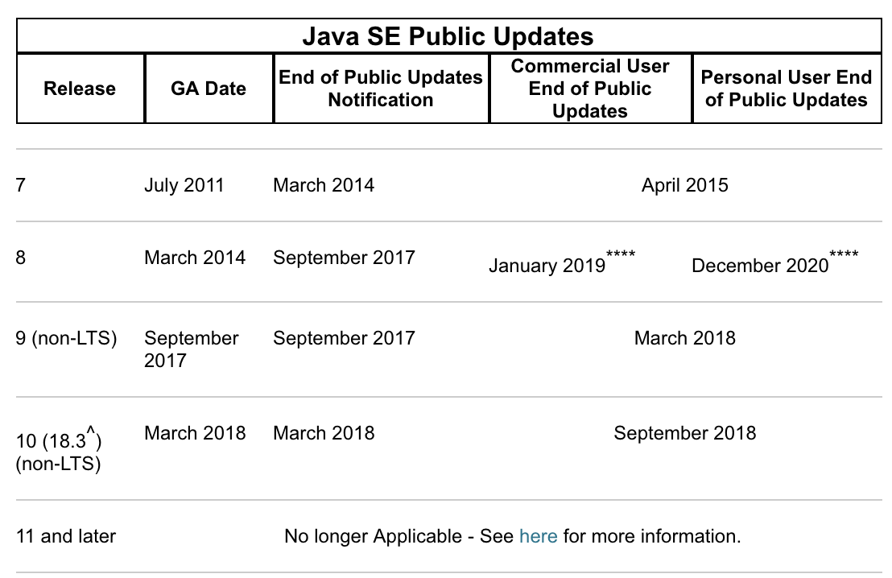
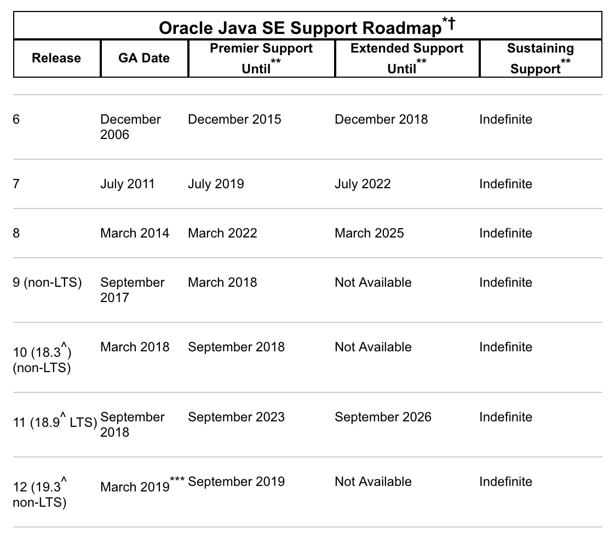
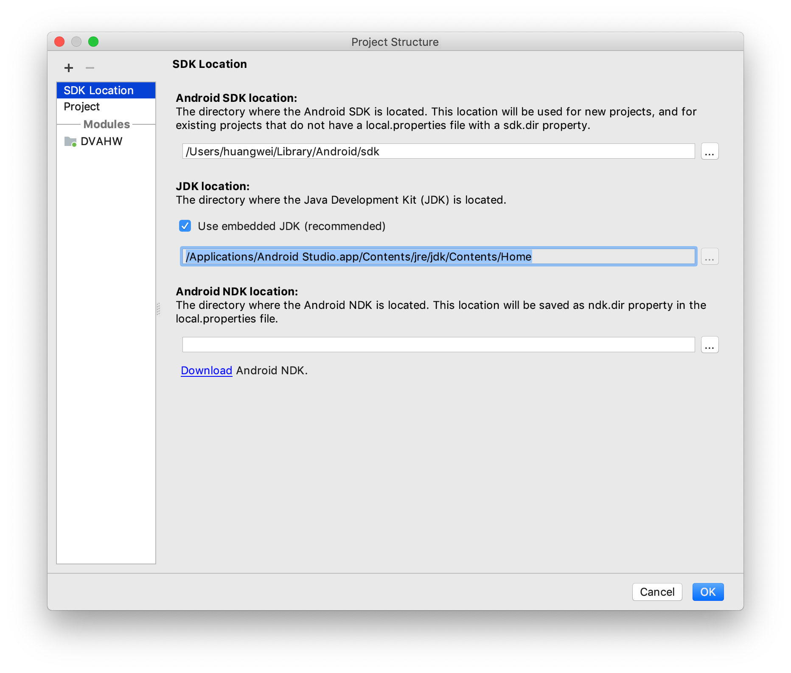
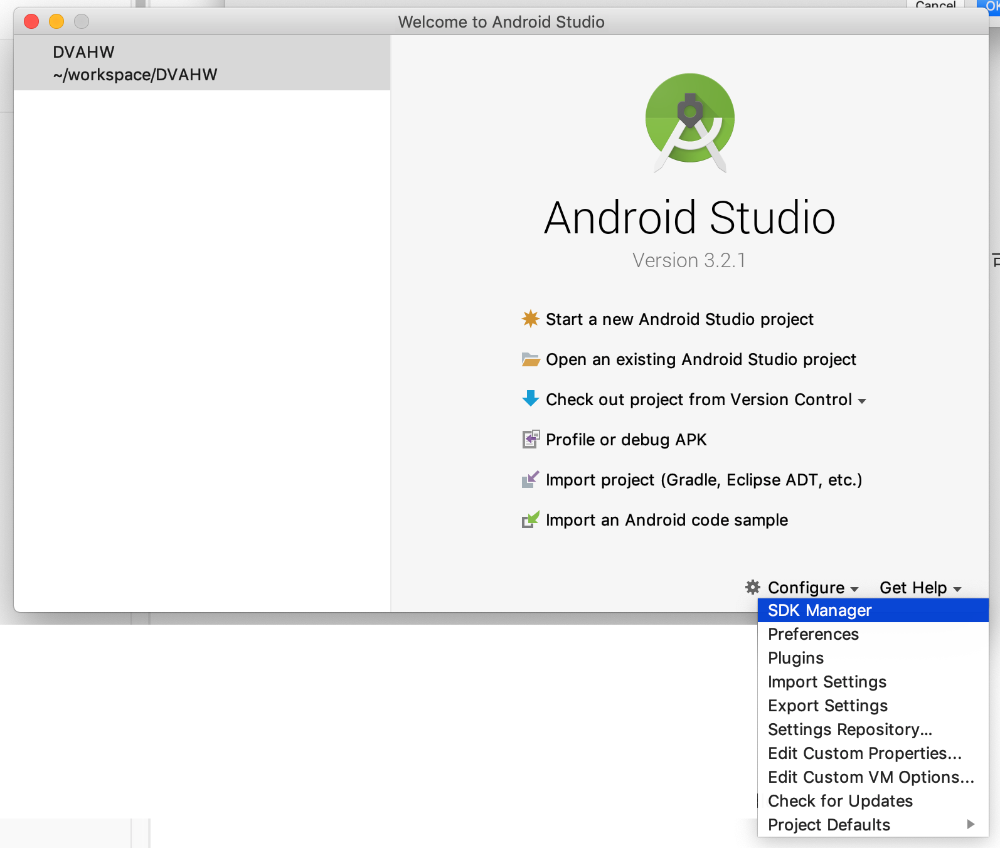
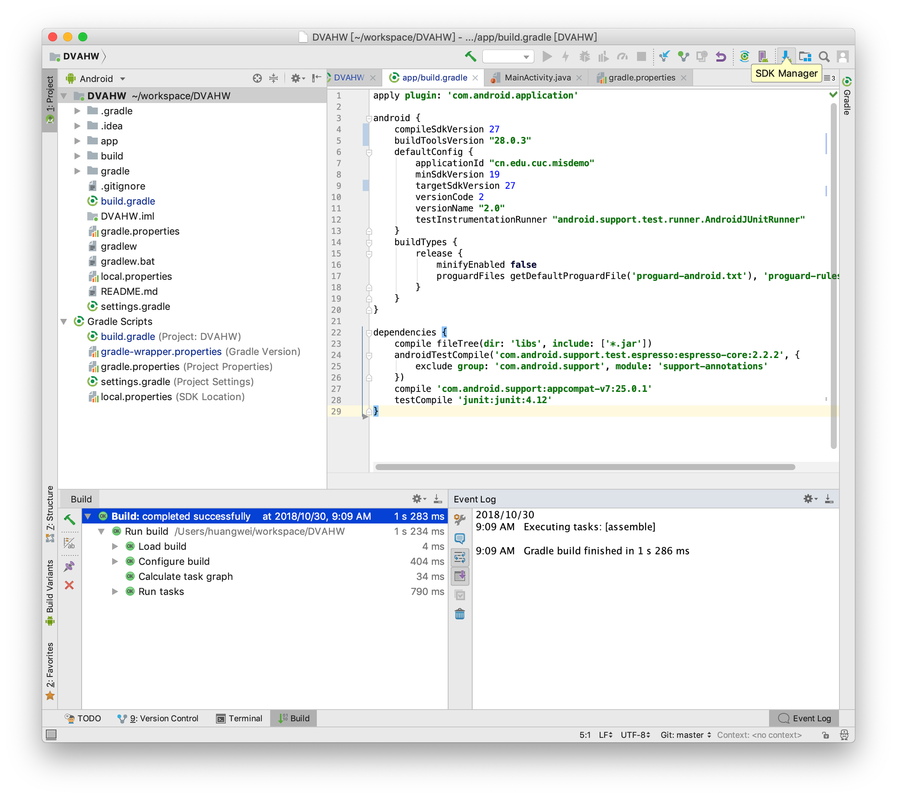
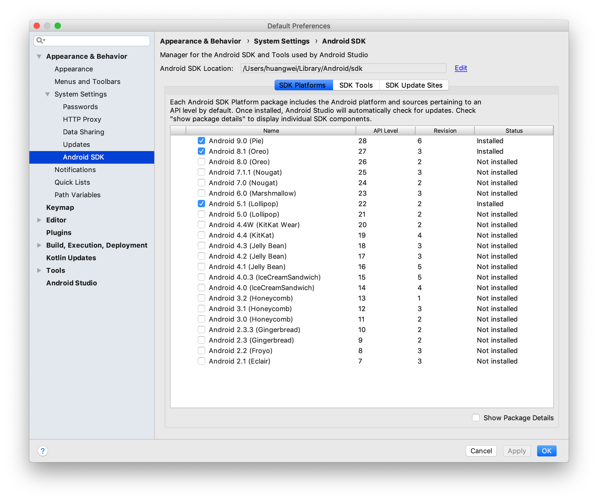
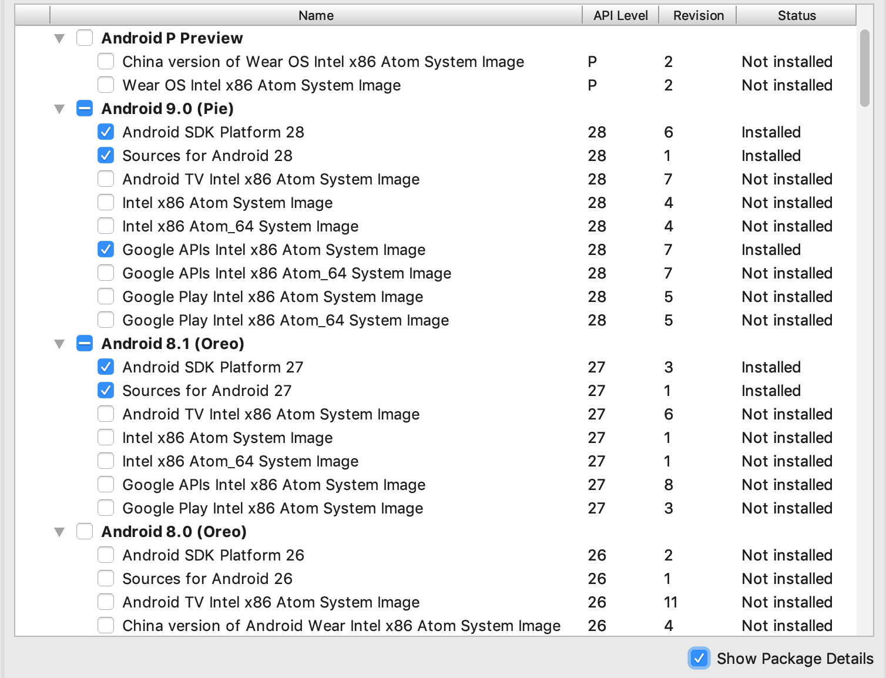
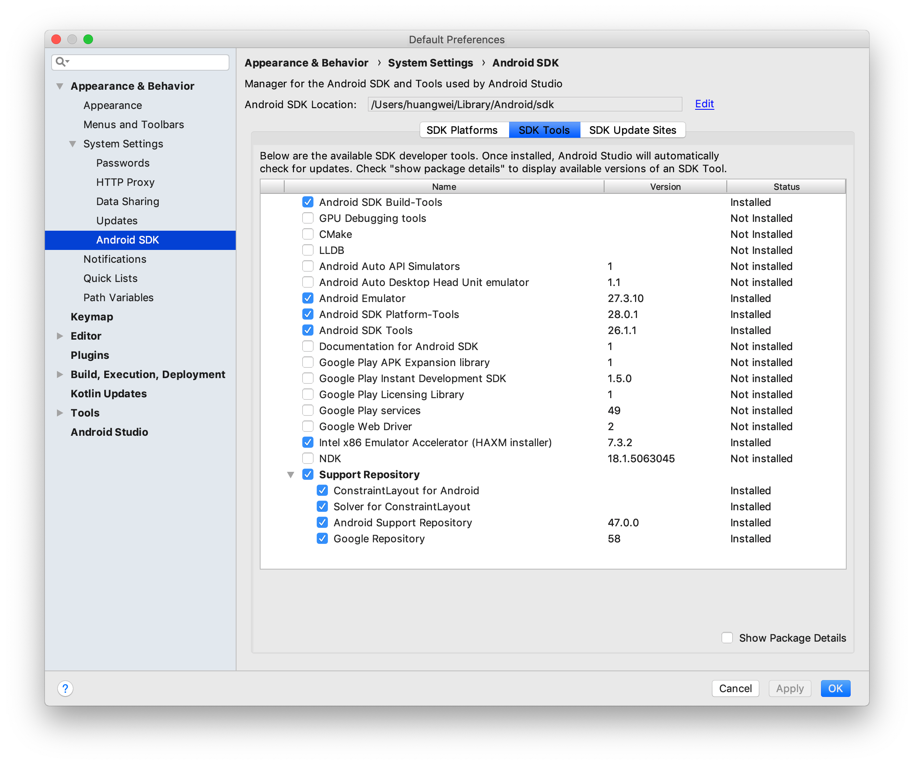

安装和配置 Java SDK
如何选择 Java SDK 版本？参考 Java 官方的版本支持计划，首选 LTS（长期支持，Long-Term-Support ）版本，确保可获得足够长时间的官方维护和更新支持。


按照 Java 官方的说法，从 Java 11 开始，Oracle 将在 GPLv2 许可证下提供 JDK 版本，采用 Classpath Exception (GPLv2+CPE) 的方式，满足了在商业许可下使用 Oracle JDK 作为 Oracle 产品或服务的一部分，或者不想使用开源软件的需求。这种使用开源许可证和商业许可证的组合取代了历史上的“BCL”许可证，该许可证具有免费和付费商业条款的组合。
Android Studio 安装后已经内置了 Java 运行时环境，以 Android 3.2.1 为例，通过菜单 File -> Project Structure -> SDK Location 可以查看到 Android Studio 在编译当前项目时使用的 JDK 目录。

安装Android Studio
通过官方网站下载Android Studio 最新版本并根据提示安装，安装 Android Studio 的过程中可能会提示联网下载更新 Android SDK。
下载安装 Android SDK
在启动 Android Studio 之后可以通过启动界面的菜单选项 Configure -> SDK Manager 启动 SDK Manager 。

或者通过在默认打开项目的视图工具菜单里找到 SDK Manager 按钮启动 SDK Manager。

SDK Manager 的 SDK Platforms 选项卡可以选择不同版本的 SDK 下载安装。

Android 版本号与 API Level 之间的对应关系见下图：

不同版本的 SDK Platforms 默认会被安装到 $ANDROID_HOME/platforms/android-$APILevel 。每一个版本的 Platforms 通常包含以下组件:
- Android SDK Platform package. 用于构建目标 Android 系统版本应用所需工具。
- 若干系统镜像包，用于 Android 模拟器运行所需要的操作系统镜像。每个平台版本都会包含不同产品类型的定制版本镜像（例如手机，电视和可穿戴设备），每一种产品类型还可能按照支持的 CPU 架构差别细分出不同版本（例如，Intel x86 和 ARM EABI）。标记为
Google APIs的镜像包含了访问 Google Play 服务的 API 支持，标记为Google Play的镜像内置了 Google Play 应用程序。 - Android 系统源代码。
在 SDK Platforms 选项卡中勾选 Show Package Details 可以进一步定制下载哪些系统组件，如下图所示：

SDK Tools 选项卡可以选择不同的开发者工具下载安装，关于该选项卡下推荐安装的软件包和图标状态说明请参考官方帮助文档。

Android SDK Tools 默认被安装到 $ANDROID_HOME/tools，包括一些常用的命令行辅助工具，如 avdmanager, sdkmanager, lint 等。
Android SDK Platform-tools 默认被安装到 $ANDROID_HOME/platform-tools，这些工具会随着 android 系统版本的升级进行更新以支持新特性（通常是修复或改进工具），每次更新都是向后兼容旧版本。
Android SDK Build-Tools 默认被安装到 $ANDROID_HOME/build-tools/$version/。构建 Android 应用程序必须使用到这个软件包。这个软件包里的大部分工具不是直接提供给开发者使用的，而是在构建软件过程中被构建工具（例如 gradle ）自动调用。
配置 Android 模拟器运行环境
在 PC / Mac 上运行 Android 模拟器强烈建议必须安装 Intel x86 Emulator Accelerator (HAXM installer)，并且配合使用 ABI 类型为 x86/x86_64 的模拟器以获得最流畅的模拟器使用体验。
在 Android 模拟器上运行应用请参阅官方文档。
配置 Gradle 编译环境
- gradle 版本和 Android Studio Gradle 插件版本
- 使用 Android Studio 的内置 gradle 还是使用自己安装的 gradle